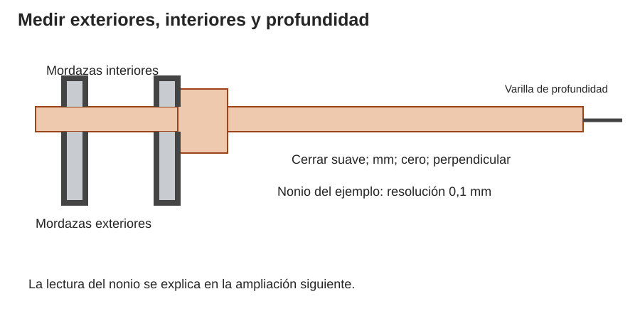
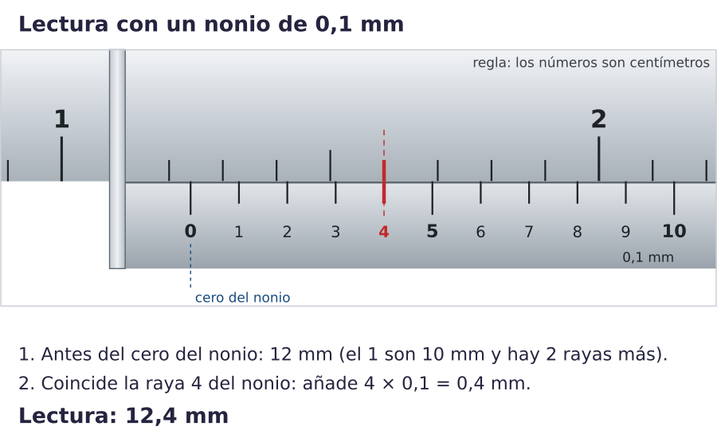
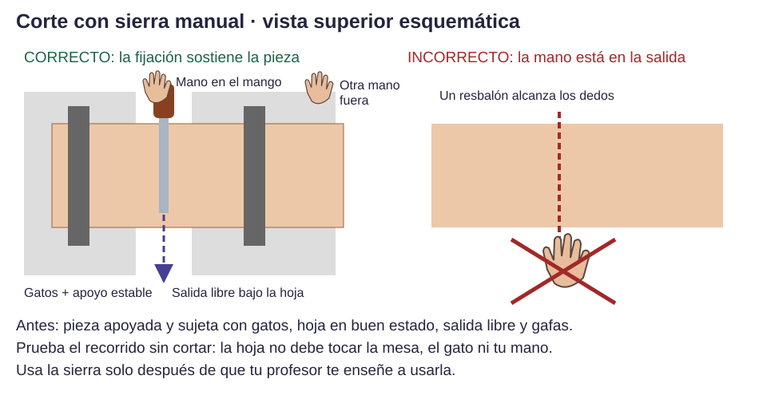
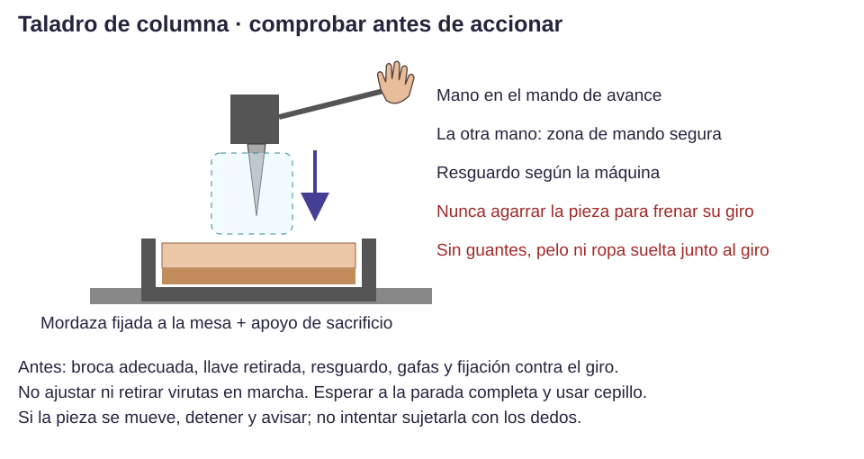
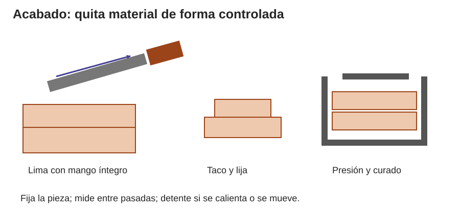

Contenido
Lo que vas a aprender
Antes de fabricar vuestra pieza vas a practicar en el taller con trozos de material que sobran (retales): medir con el calibre, marcar, cortar, taladrar y dejar bien acabada una pieza. Ninguna herramienta se usa sin que te la haya enseñado antes.
1. Normas del taller
- Pelo recogido, nada colgando (cordones, pulseras, mangas sueltas) y el puesto despejado.
- La pieza siempre sujeta con un gato o una mordaza, nunca con la mano.
- La otra mano, fuera del camino de la herramienta y de por dónde saldría si resbalara.
- Gafas al cortar, taladrar o limar.
- En el taladro: sin guantes y nada suelto que se pueda enganchar al girar.
- En la impresora: no se tocan la boquilla ni la bandeja, que queman, ni las piezas que se mueven.
- Si algo se mueve, se atasca, huele a quemado o se rompe: para y avisa.
- Se limpia con cepillo y recogedor, nunca soplando ni con la mano.
Si hay un accidente: para, avísame enseguida y no sigas trabajando. Una quemadura se enfría con agua del grifo durante 20 minutos. No te frotes un ojo si te entra algo. Ficha de seguridad del taller (PDF).
2. Medir con el calibre
El calibre (o pie de rey) mide con mucha más precisión que una regla: hasta décimas de milímetro. Tiene tres formas de medir:

- Mordazas grandes: miden por fuera (el grosor de una tabla).
- Mordazas pequeñas: miden por dentro (el diámetro de un agujero).
- Varilla: mide profundidades (el fondo de una caja).
- Cierra el calibre y comprueba que marca 0.
- Coloca la pieza entre las mordazas y ciérralas hasta que toquen, sin apretar. Mantén el calibre recto, no inclinado.
- Lee la medida: los milímetros enteros en la regla, antes del cero del nonio; las décimas, en la raya del nonio que coincide con una raya de la regla.
- Repite en otro punto. Si las dos medidas son muy distintas, mide una tercera vez.

Practica la lectura. Mueve la corredera y lee la medida antes de mostrar la solución. Después prueba el «Reto de lectura».
3. Marcar y cortar

- Mide dos veces desde el mismo borde y marca con lápiz fino y escuadra.
- Señala qué parte sobra: la sierra se come un poco de material, así que corta por el lado que sobra de la línea.
- Sujeta la pieza con gatos y comprueba que la sierra no tocará la mesa ni el gato.
- Empieza despacio, sin forzar, y con la otra mano lejos.
- Mide el resultado.
4. Taladrar

- Marca el centro del agujero.
- Enséñame el material y el diámetro: compruebo la broca y la sujeción.
- Pieza en la mordaza, con una madera debajo para no astillar la salida. Gafas puestas.
- Baja la broca despacio, sin forzar.
- Para la máquina, espera a que deje de girar y saca la pieza. Limpia con el cepillo.
5. Acabar y unir

- Limar y lijar quita poco material cada vez: mide entre pasada y pasada.
- Empieza con lija gruesa y termina con lija fina.
- Si algo no encaja, busca dónde roza antes de quitar material. Si sobra demasiado espacio, no se arregla lijando: hay que rediseñar.
- Tornillos: la unión se puede desmontar y reparar. Cola: sigue lo que dice el bote y no cargues la pieza hasta que esté seca.
Compruébalo
Normas del taller: ¿verdadero o falso?
00:00: